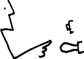

Physical Interaction Design for Music

Instructors: Sasha Leitman and Fernando Lopez-Lezcano
TA: Myles Borins
When: Monday & Wednesday 10am-noon plus one 2 hour lab every week.
Where: CCRMA Classroom, The Knoll
In recent years, technologies for synthesizing, processing and controlling sound, as well as those for embedded computing, sensing and inter-device communication have become independently mature. This course explores how we can physically interact with electronic sounds in real time. A series of exercises introduces sensors, circuits, microcontrollers, communication and sound synthesis. We discuss critically what the merging of these technologies means for music and art. Along with new technologies, what new music practices or art forms may emerge?
In the broader sense, this course deals with interaction design: What happens when human behaviours meet those of machines? How do the devices we use determine the style of interaction? How do we design for the limitations of human performance and the affordances of machines.
Office Hours: Sasha's office hours are Monday, Wednesday noon - 3pm. Thursday 9am - 1pm by appointment. If you do not find me in the Max Lab, please call my cellphone (the number is posted on my desk). I might be running around the building but I am here to help.
Grading: